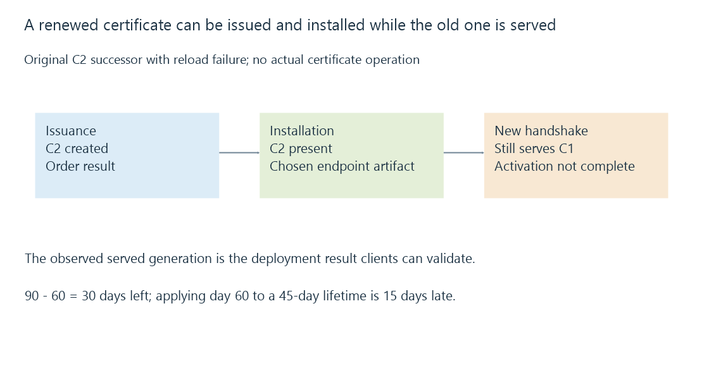

Certificate renewal, ACME and deployed results
Certificate renewal obtains and deploys successor TLS evidence through distinct validation, issuance, installation and endpoint-reload stages, which ACME can automate in part.
A certificate renewal job reports success, yet a TV still receives an expired certificate. The new artifact may have been issued correctly while the public TLS endpoint continues serving its predecessor.
Renewal needs an observed deployment result as well as an issuance result.
ACME coordinates an order and identifier validation
ACME provides a protocol for a client to request certificate issuance from a supporting authority. The client supplies the desired identifiers and completes the required authorization/challenge process.
HTTP-01 demonstrates control through a prescribed HTTP resource. DNS-01 demonstrates control through the prescribed DNS TXT information. Their validation paths and requirements differ.
The certificate’s public key comes through a signing request. The server’s private key and the ACME account key have separate roles; identifier validation does not turn either into a public DNS record.

ACME success is not proof that an Emby listener or reverse proxy has loaded that certificate.
The served generation can remain old
Use this original reduced deployment state:
{
"issuedGeneration": "C2",
"installedGeneration": "C2",
"servedGeneration": "C1",
"reloadSucceeded": false,
"newHandshakeChecked": false
}
The new file is present, but the modeled endpoint did not activate it. A subsequent new handshake is the observation that can establish what clients now receive.
A file copied to the direct Emby listener also does not update a different public reverse proxy. The job must address the TLS endpoint the client actually contacts.
The chain and matching private key need to be deployed coherently. Replacing only the leaf can leave another path-validation problem.
Renewal timing follows the actual lifetime
For a declared ninety-day teaching certificate, choosing renewal at sixty days leaves thirty days of remaining lifetime. A sixty-day fixed schedule applied to a forty-five-day certificate instead reaches the certificate fifteen days after expiry.
90-day lifetime - renewal at day 60 = 30 days remaining
45-day lifetime - renewal at day 60 = 15 days too late
The arithmetic is a model, not a recommended universal renewal policy. Derive timing from the actual certificate, authority/client behavior and renewal information rather than assuming every artifact retains a historical lifetime.
Public-trust policy is changing
As checked on 12 October 2026, the cited CA/Browser Forum requirements limit subscriber certificates issued from 15 March 2026 until 15 March 2027 to a maximum two hundred days.
That maximum is not a promise that an individual authority issues certificates for two hundred days. Providers can choose shorter lifetimes.
Let’s Encrypt’s current published plan moves its default to sixty-four days in February 2027 and forty-five days in February 2028. Those future changes should not be described as an already universal forty-five-day default in October 2026.
The current policy references provide the dated context; an automation should observe its issued artifact and authority’s supported renewal mechanisms.
Validation and deployment can fail independently
A DNS challenge can fail because the required record has not reached the validation context. An HTTP challenge can reach another listener or path. An accepted challenge can still be followed by a failed issuance or artifact retrieval.
After issuance, permissions, key pairing, format, destination and reload behavior form another sequence.
An existing application connection can also retain its already negotiated TLS session while new connections see another certificate generation. A new-handshake check identifies the deployed evidence rather than merely reusing an earlier connection.
Keep useful evidence for each stage
Retain the requested identifiers, authorization/order outcome, issued certificate expiry, deployment destination and certificate observed at the intended endpoint.
Emby’s direct secure listener and a proxy installation have different artifact/reload arrangements. Their successful output is the intended leaf/chain/key relationship made visible to clients, not simply a renewal command ending with a successful status.
See Also
- TLS certificates, public keys and endpoint evidence
- Certificate trust chains and path validation
- TLS termination and independent connection legs
- DNS resolution, record types and cached answers